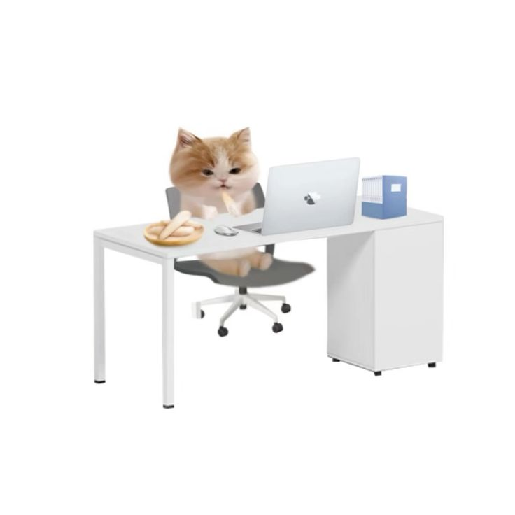

Linux
Es un sistema operativo que se lanzó en 1991. Gracias a su comunidad internacional de aficionados, hoy en día lo podemos encontrar en todo tipo de dispositivos, desde sistemas de puntos de ventana hasta las supercomputadoras más potentes del mundo.
Linux fue creado por Linus Benedict Torvalds (Helsinki, Finlandia, 28 de Diciembre de 1969) es un ingeniero de software, conocido por iniciar y mantener el desarrollo del kernel (núcleo) Linux, basándose en la idea del sistema operativo libre Minix creado por Andrew Tanenbaum.
Torvalds comenzó el proyecto en 1991 mientras era estudiante de la Universidad de Helsinki. Inicialmente, lo desarrolló como un núcleo de sistema operativo libre para su computadora personal.
En la actualidad Linux aún no ha sido finalizado. Continúa siendo un sistema operativo activo y en desarrollo, con actualizaciones y nuevas versiones lanzadas regularmente.
La idea fundamental que ayudó a revolucionar Linux fue el código abierto a la colaboración comunitaria, donde el código fuente es accesible para todos y la comunidad puede colaborar a su desarrollo y rendimiento.
En la actualidad, Linux es un sistema operativo de código abierto muy popular y utilizado en una amplia variedad de dispositivos. Desde servidores y supercomputadoras hasta dispositivos móviles y de escritorio, Linux se ha convertido en una opción versátil y potente. Su flexibilidad, seguridad y personalización lo hacen ideal para diversas aplicaciones, desde el desarrollo de software hasta de gestión de infraestructuras de red.
Y por todos esos puntos destacables, Linux es el sistema operativo que los desarrolladores más prefieren, ya sea aficionado, estudiante o profesional.
| Requerimientos Minimos |
. |
. |
. |
. |
. |
. |
| ARCH LINUX |
Arquitectura de CPU: x86-64 (64 bits). |
RAM: 512 MB. Se recomienda 2 GB o más. |
Almacenamiento: 2 GB. Se recomienda 20 GB o más. |
Conexión a internet: Estable y activa. |
Unidad USB: 2 GB de capacidad (para la instalación). |
| UBUNTU LINUX |
Procesador: Doble núcleo a 2 GHz o superior. |
RAM: 4 GB (se recomiendan 8 GB para un uso más fluido).
|
Espacio en disco: 25 GB (o más para instalar aplicaciones adicionales).
|
Gráficos: Tarjeta gráfica y monitor capaces de una resolución de al menos 1024 x 768 píxeles. |
Medios de instalación: Lector de DVD o puerto USB.
|
Conexión a Internet: Para actualizaciones y descargas de software. |
| KALI LINUX |
Procesador: Se recomienda una CPU de doble núcleo o superior. |
RAM: 1GB de RAM |
Espacio en disco: 20GB |
Conexión a Internet: Para actualizaciones y descargas de software.
|
| Requerimientos Recomendados |
. |
. |
. |
. |
. |
. |
| ARCH LINUX |
RAM: Al menos 512 MB, pero se recomienda 2 GB para un uso fluido y una instalación sin problemas.
|
Almacenamiento: Al menos 1 GB, pero se recomienda 20 GB para tener espacio suficiente para el sistema y las aplicaciones.
|
Arquitectura: El sistema debe ser compatible con x86-64.
Conexión a Internet: Se necesita una conexión a internet estable para la instalación y actualizaciones.
|
Unidad USB: Se recomienda una unidad USB de al menos 2 GB para grabar la imagen de instalación, según.
|
| UBUNTU LINUX |
Procesador: Procesador de cuatro núcleos a 2 GHz o superior.
|
Memoria RAM: 8 GB o más para un mejor rendimiento.
|
Tarjeta gráfica: Una tarjeta gráfica compatible con aceleración 3D.
|
| KALI LINUX |
RAM: Al menos 4 GB, pero 8 GB o más son ideales para un funcionamiento fluido.
|
CPU: Un procesador de 64 bits con una velocidad de reloj de al menos 2 GHz. Se recomienda una CPU de doble núcleo o superior.
|
Espacio en disco: 20GB |
Espacio en disco: Se recomienda tener al menos 32 GB de espacio.
|
Hardware: Kali Linux es compatible con arquitecturas i386, amd64 y ARM.
|
Sistema operativo de base: Si se instala Kali Linux en una máquina virtual, se recomienda tener un sistema operativo Windows 7 o superior como host.
|
Conexión a internet: Es recomendable para la actualización de paquetes y la descarga de software.
|

